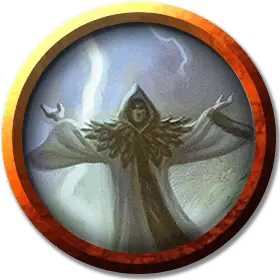

Небесный ткач
Skyweaver
Средний Гуманоид (Человек), хаотично-злой

Класс Доспеха 12 (15 с доспехом мага)
Хиты 44 (8к8 + 8)
Скорость 30 футов
| мод | спас | ||
|---|---|---|---|
| СИЛ | 8 | −1 | −1 |
| ЛОВ | 14 | +2 | +2 |
| ТЕЛ | 12 | +1 | +1 |
| мод | спас | ||
|---|---|---|---|
| ИНТ | 11 | +0 | +0 |
| МДР | 10 | +0 | +0 |
| ХАР | 16 | +3 | +3 |
Навыки Обман +5, Убеждение +5
Чувства пассивное Восприятие 10
Языки Общий, Ауран
Опасность 3 (700 опыта)
Бонус мастерства +2
Особенности
Использование заклинаний. Небесный ткач является заклинателем 6-го уровня. Его базовой характеристикой является Харизма (Сл спасброска от заклинаний 13, +5 к атакам заклинаниями). Он знает следующие заклинания чародея:
• Заговоры (неограниченно): защита от оружия [blade ward], свет [light], сообщение [message], луч холода [ray of frost], электрошок [shocking grasp]
• 1 уровень (4 ячейки): падение пёрышком [feather fall], доспехи мага [mage armor], ведьмин снаряд [witch bolt]
• 2 уровень (3 ячейки): порыв ветра [gust of wind], невидимость [invisibility]
• 3 уровень (3 ячейки): полёт [fly], молния [lightning bolt]
Действия
Кинжал. Рукопашная или дальнобойная атака оружием: +4 к попаданию, досягаемость 5 футов или дистанция 20/60 футов, одна цель. Попадание: колющий урон 3 (1к4 + 1).
Описание
Небесные ткачи переполнены яростью и страстями, что делает их прекрасным сосудом для дикой,разрушительной магии культа Воющей Ненависти. В отличие от своих братьев по культу воздуха, —ураганов — небесные ткачи поклоняются Элементальному Злу в надежде обрести лёгкий путь к могуществу. У них не так много опыта в обращении с магией стихий, поэтому, когда небесные ткачи чувствуют прилив сырой элементальной энергии, они начинают дрожать от возбуждения.